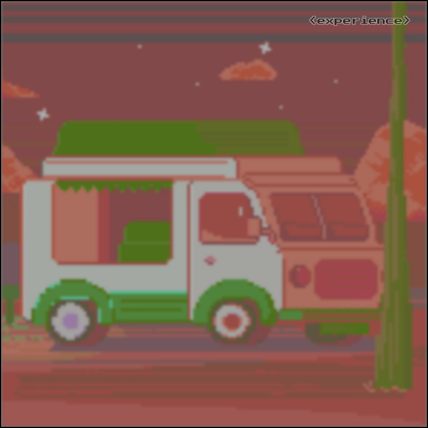

Начало пути: HTML и первый тег
HTML

Помню первый день курса. Открыл редактор, написал <h1> и увидел заголовок в браузере — это было настоящее волшебство. Казалось бы, всего один тег, а сколько эмоций.
Именно тогда я понял: веб — это живое, и каждый элемент имеет смысл.